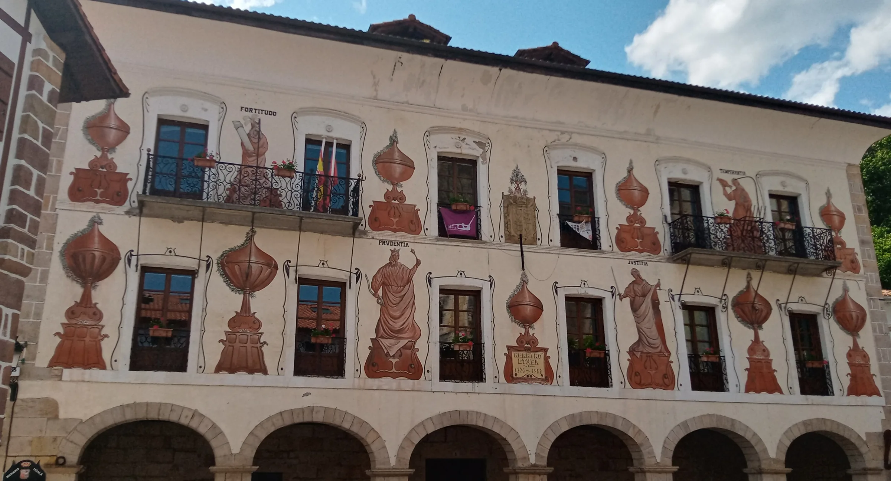
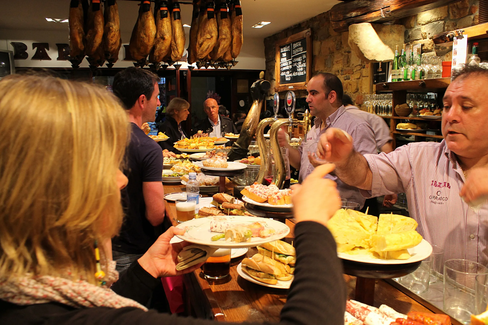
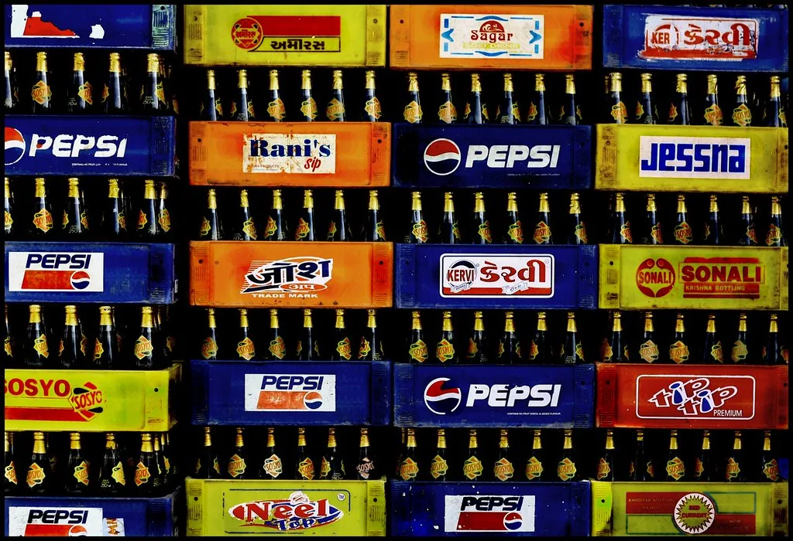
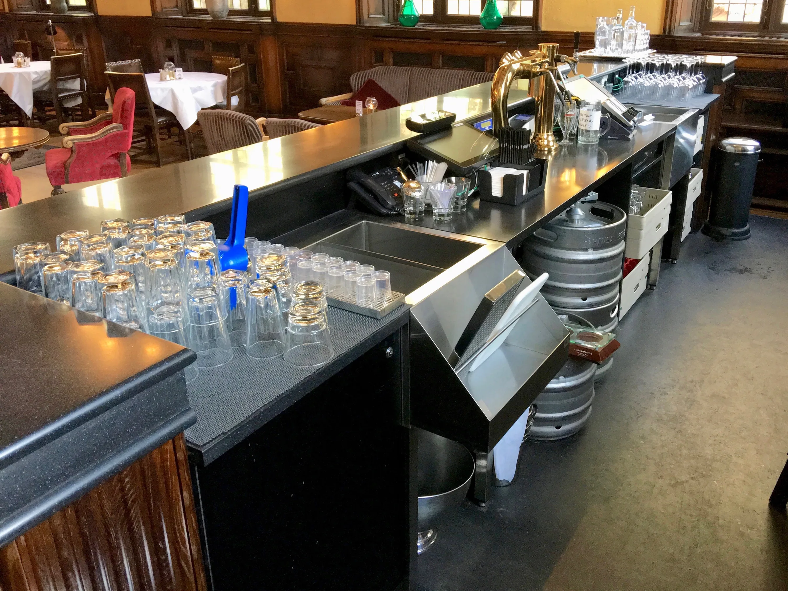
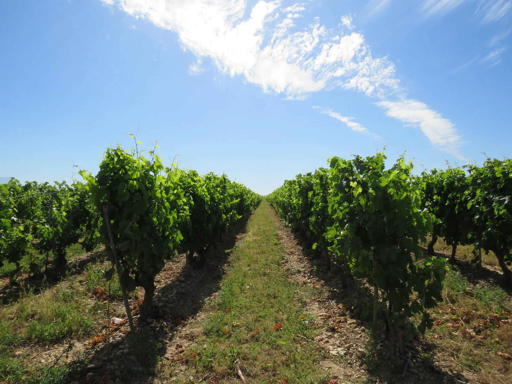

Cercanía
Somos de aquí y trabajamos aquí. Conocemos cada bar, cada tienda y cada sociedad de la comarca, y nos puedes llamar o venir a vernos cuando quieras.
Más de 75 años sirviendo a la comarca. Desde 1949, las bebidas de los bares, restaurantes y tiendas de Bortziriak, Malerreka y Baztán salen de nuestro almacén de Bera.

Manuel Taberna empezó a repartir bebidas por la comarca en 1949, cuando los pedidos se apuntaban a mano y los caminos eran otros. En 1988 la actividad se constituyó como Manuel Taberna S.L., pero la esencia no ha cambiado: una empresa familiar de Bera que conoce a cada cliente por su nombre.
Hoy somos un equipo de unas diez personas que sigue haciendo lo mismo que entonces, solo que con más familias de producto, más marcas oficiales y las mismas ganas: que a tu negocio no le falte nunca de nada.
Trabajamos para quienes dan de comer y de beber a la comarca. Si tu negocio sirve un café, un pintxo o una mesa entera, somos tu proveedor.


Nuestros repartidores recorren toda la comarca llevando nuestros productos a vuestros bares, restaurantes y tiendas. Aun así, también puedes venir a vernos si necesitas cualquier cosa: las puertas están abiertas.
El almacén está en el barrio de Agerra, en Bera, y abre de lunes a viernes de 08:00 a 15:00. Desde allí sale el reparto semanal a todas las localidades de Bortziriak —Bera, Lesaka, Etxalar, Arantza e Igantzi—, Malerreka y el valle de Baztán.
Las furgonetas son otras y el catálogo ha crecido, pero la manera de trabajar es la misma de siempre.
Somos de aquí y trabajamos aquí. Conocemos cada bar, cada tienda y cada sociedad de la comarca, y nos puedes llamar o venir a vernos cuando quieras.
Tres generaciones de hosteleros han trabajado con nosotros. La confianza se gana pedido a pedido, y llevamos más de 75 años ganándola.
Cada semana pasamos por tu pueblo, llueva o haga sol. Tu pedido llega el día que toca, y si surge un imprevisto, el almacén está abierto cada mañana.

